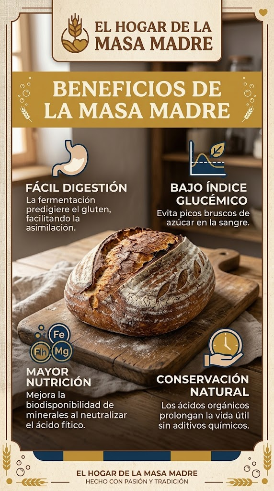

Hogaza Rústica de Masa Madre
Elaborada con fermentación natural de 24 horas, harina orgánica de trigo y corteza crujiente. Explora el producto en 3D o proyéctalo en tu espacio antes de realizar tu compra.
Composición: Harina de trigo, agua, masa madre natural y sal marina.

¿Por qué elegir Masa Madre?
El proceso artesanal de fermentación biológica transforma la estructura del pan, aportando beneficios clave para el bienestar sin necesidad de aditivos químicos.
• Fácil Digestión: La maduración degrada parcialmente las proteínas del gluten.
• Bajo Índice Glucémico: Mantiene niveles estables de energía.
• Biodisponibilidad: Neutraliza el ácido fítico, liberando minerales esenciales como hierro y magnesio.
Nuestros Productos
Hogaza Tradicional
Pan artesanal con alveolado abierto y sabor ligeramente ácido equilibrado.
Focaccia de Romero & Sal
Masa madre hidratada al 80% con aceite de oliva extra virgen y romero fresco.
Pizza de Masa Madre (Pomodoro)
Base de pizza pre-horneada de maduración de 48h con salsa de tomate artesanal.
Pan de Molde & Brioche
Pan suave de fermentación natural enriquecido con mantequilla artesanal.